1.什么是逻辑回归
- 因为在之前的问题中，我们解决的都是回归问题，使用线性回归就可以解决，而在分类问题中，我们要预测的结果是一个离散的值，比如0 , 1等，所以线性回归变得不再适用，以此引入逻辑回归（Logistic Regression）算法。
使用逻辑回归带来的问题是，我们的预测函数h（x）的值可能为 >1或者 <0, 而我们希望输出是0或者是1，所以我们需要一种方法使得假设函数的输出在0~1之间。
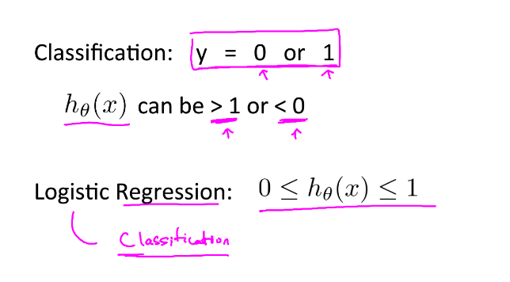
解决办法：使用一个新的假设函数，使得函数的值在0~1之间，函数的具体形式如下所示（也成为sigmoid 函数），当h（x）=0.7时，代表此个输入有 70% 的概率可能使y=1。
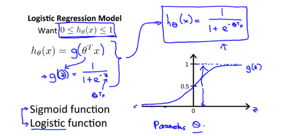
2.决策边界
- 假设函数的图像如下图所示，设定：当h（x）>= 0.5时，我们将输出值预测为1；当h（x）< 0.5时，我们将输出中预测为0。0.5也就称之为函数的决策边界
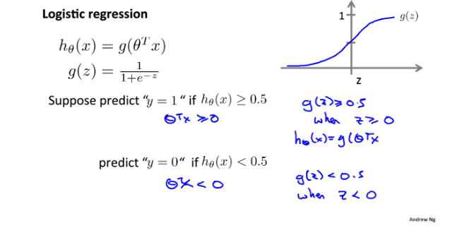
- 线性函数，使用线性方程可以很好的拟合
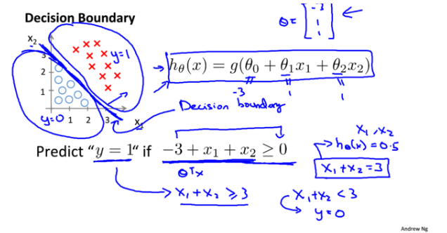
- 非线性函数，使用高阶函数可以拟合
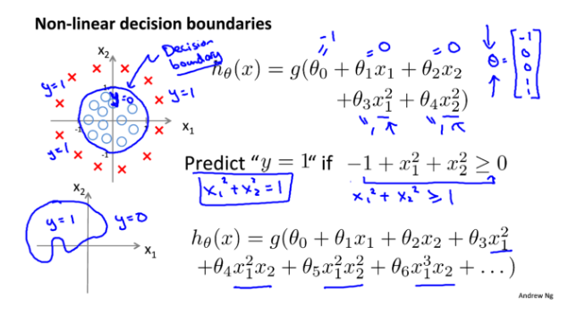
3.代价函数
- 在线性回归中，我们使用差值平方和作为评估函数，是因为在线性回归中，这个评估函数 J（θ）是凸函数，所以通过梯度下降，它可以很容易地找到min。但是在逻辑回归中，差值平方和函数的图像如下图所示，他不是一个凸函数，所以可能会陷入到一个局部最小值中，所以我们使用一个新的代价函数来代替 差值平方 这个指标。
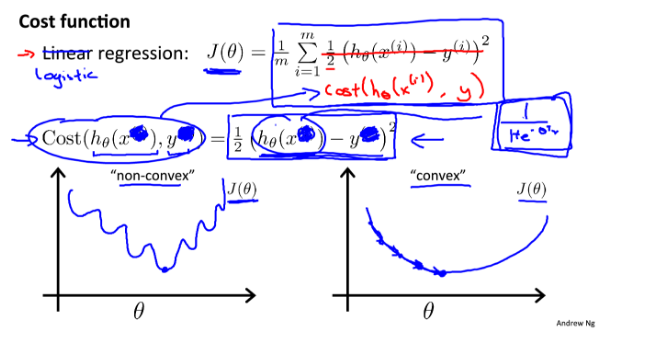
- 新的评价指标如下图所示。
- 当y = 1时，函数图像如下图所示，当h（x）= 0时，因为我们实际的 y 值为1，所以也就是说这次的预测是及其不准确的，所以cost将会很大。
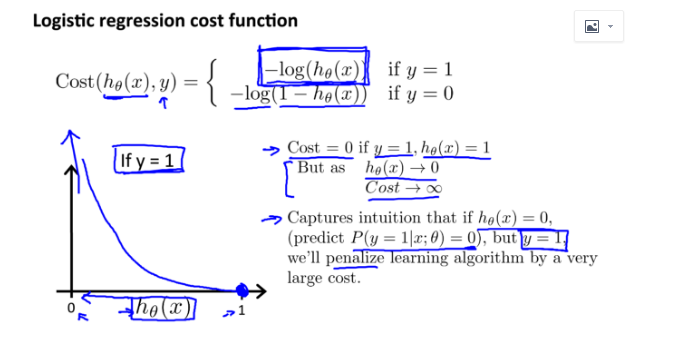
- 当y = 0时，函数图像如下图所示，当h（x）= 1时，因为我们实际的 y 值为0，所以也就是说这次的预测是及其不准确的，所以cost也将会很大。
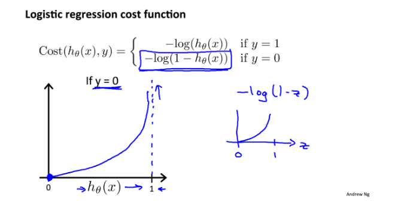
4.梯度下降
- 可以将代价函数简化为下图所示，将分段函数转为一个多项式函数
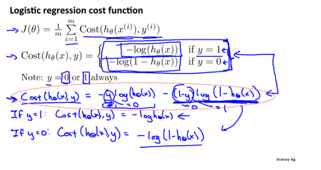
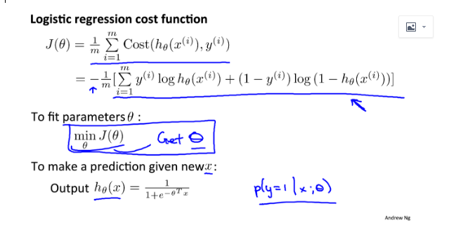
- 梯度下降
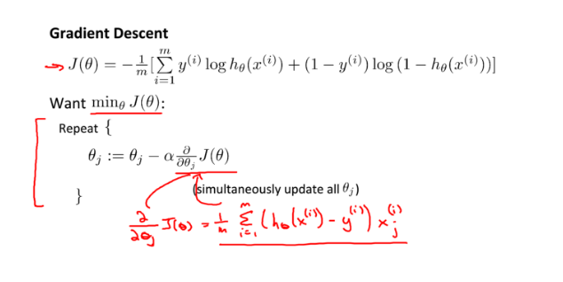
- 记住是同时更新
- ps：与线性回归的区别 –> h（x）不同
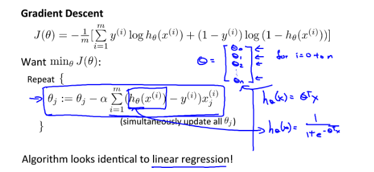
5.高级优化
一些相对于梯度下降更优化的方法：共轭梯度下降，BFGS，L-BFGS等，他们与梯度下降相比的优点和缺点分别是
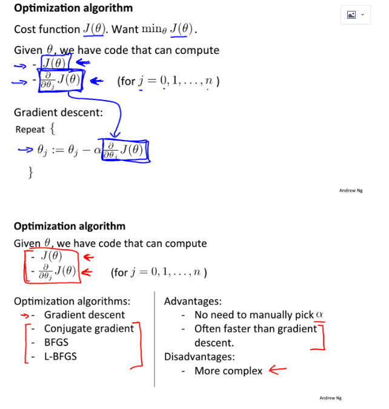
梯度下降在octave可以使用一下高级函数
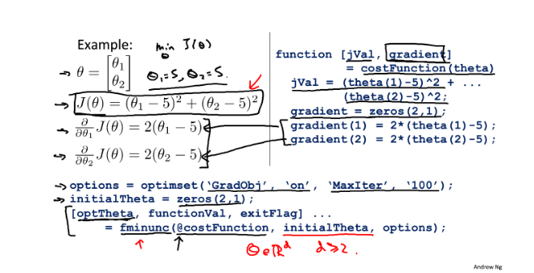
- 其中，costFunction的定义如下所示
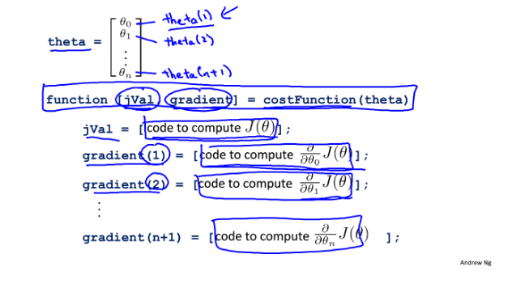
6.多分类问题
- 实际问题不一定是二分类的，在面对多分类（e.g. 1 vs n）时，我们也集合使用多个二分类的问题来解决。具体如下：
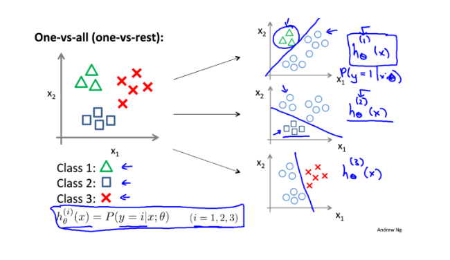
- 在每一个子分类中，选择一个具有max h（x）的值得函数作为输出
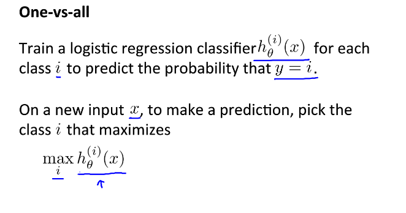